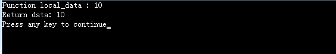
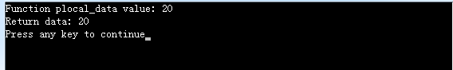

1、将函数内部定义的变量用static修饰
由于static修饰的变量，分配在静态内存区（类似于全局变量区），函数返回时，并不会释放内存，因此可以将要返回的变量加static修饰。
1 int *test_func()
2 {
3 static int local_data; //加static修饰
4 local_data = 10;
5
6 printf("Function local_data : %d\n", local_data);
7
8 return &local_data;
9 }
10
11 int main()
12 {
13 int *main_data = NULL;
14
15 main_data = test_func();
16
17 printf("Return data: %d\n", *main_data);
18
19 return 0;
20 }
2、使用分配在堆上的内存
分配在堆上的内存主要指通过malloc、calloc、realloc等函数动态分配的内存，由于堆上的内存需要手动释放，因此可以在使用完以后再释放，这样指针就不会指向未知。
注意：堆上的内存必须要用完即释放，否则容易造成内存泄漏。
1 int *local_data_test()
2 {
3 int *plocal_data;
4
5 plocal_data = (int *)malloc(sizeof(int));
6 *plocal_data = 20;
7
8 printf("Function plocal_data value: %d\n", *plocal_data);
9
10 return plocal_data;
11 }
12
13 int main()
14 {
15 int *main_data = NULL;
16
17 main_data = local_data_test();
18
19 printf("Return data: %d\n", *main_data);
20 free(main_data);
21 main_data = NULL;
22
23 return 0;
24 }
另外一般要返回指针的情况，也可以用全局变量或者传入指针参数代替。